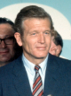
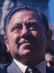

Party: Liberal
Bio: Incumbent mayor known for government reorganization, civil rights, and urban renewal, while defending rising crime and city unrest.

Party: Democrat
Bio: Campaigning on law and order, focusing on rising crime and city unrest, and appealing to working-class voters.
Party: Republican
Bio: Running on a conservative law and order platform, emphasizing crime reduction, lower taxes, and restoring fiscal discipline.